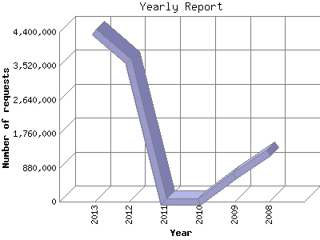

The Yearly Report shows total activity on your site for each calendar year.
Remember that each page hit can result in several server requests as the images
for each page are loaded.
Note: Most likely, the first and last years
will not represent a complete year's worth of data, resulting in lower hits.

| Year | Number of requests | Number of page requests | |
|---|---|---|---|
| 1. | 2008 | 1,260,080 | 60,177 |
| 2. | 2009 | 671,111 | 35,571 |
| 3. | 2010 | 0 | 0 |
| 4. | 2011 | 0 | 0 |
| 5. | 2012 | 3,634,548 | 1,901,424 |
| 6. | 2013 | 4,390,403 | 1,164,044 |
Most active year 2012 : 1,901,424 pages sent. 4,390,403 requests handled.
Yearly average: 790,304 pages sent. 2,489,035 requests handled.
This report was generated on November 26, 2013 02:18.
Report time frame January 4, 2008 22:03 to November 25, 2013 23:59.
| Web statistics report produced by: analog 5.1 / Report Magic 2.21 |